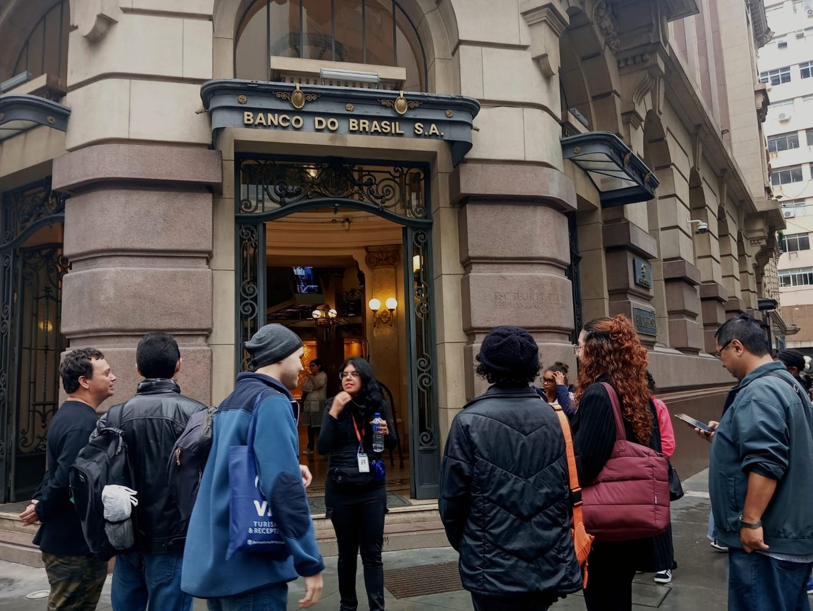
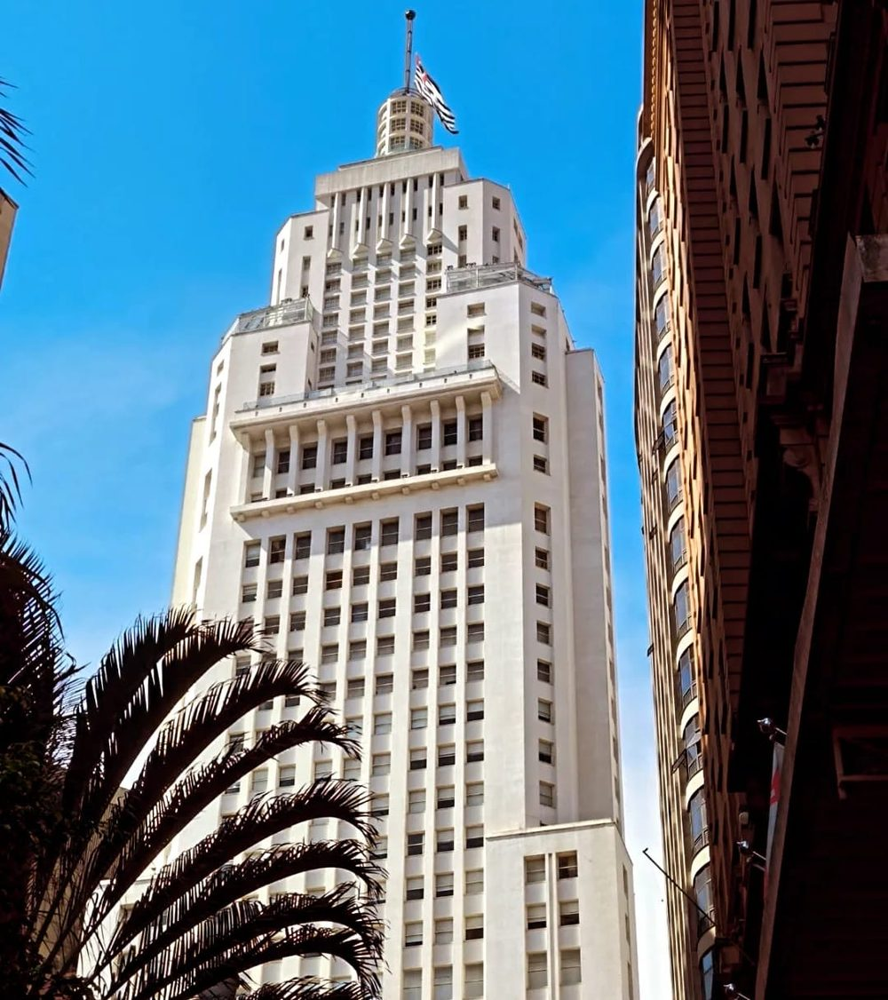
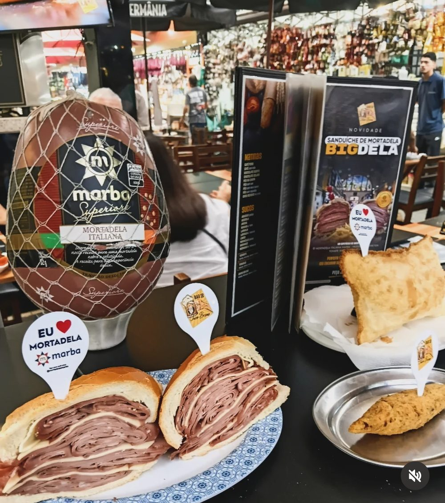

Walking tour Centro Histórico
Caminhada pelas ruas que já foram o coração da economia do Brasil, com as histórias que quase ninguém conta.
Sábado · 10hReservar →
Walking tours pelo centro e pelos bairros, gastronomia paulistana, bate-volta para o interior e roteiros sob medida para o seu grupo.

Caminhada pelas ruas que já foram o coração da economia do Brasil, com as histórias que quase ninguém conta.

Como o café transformou São Paulo em metrópole. Lugares históricos, curiosidades e café especial no roteiro.

Cores, sabores e histórias do Mercado Municipal, com parada obrigatória no sanduíche mais paulistano que existe.
O bairro das imigrações, das confecções e da culinária coreana e judaica, percorrido a pé.
Um dia em São Roque entre vinícolas, adegas e a estrada que dá nome ao roteiro.
Para família, amigos, escolas, empresas e agências. Você conta o que quer ver, a gente desenha o percurso, cuida do transporte e escala o guia no idioma do grupo.
Veja datas e vagas e reserve pelo WhatsApp. A confirmação chega com o voucher.
Na véspera você recebe o ponto de encontro com mapa e o nome de quem vai conduzir.
Roteiro a pé, no ritmo do grupo, com paradas para foto, café e perguntas.
“O centro de São Paulo muda de rua para rua. Meu trabalho é mostrar essa passagem sem pressa.”
Respondemos no WhatsApp em horário comercial. Para grupos e agências, envie data, número de pessoas e idioma.